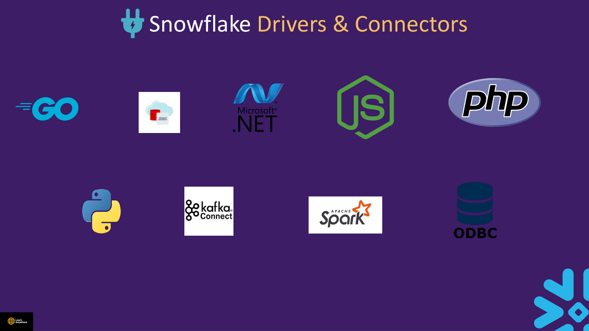
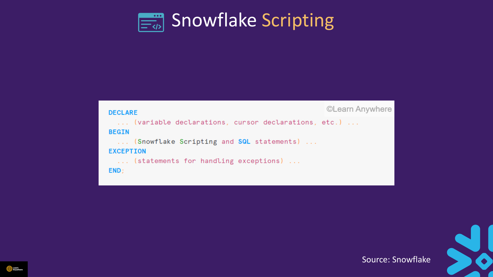
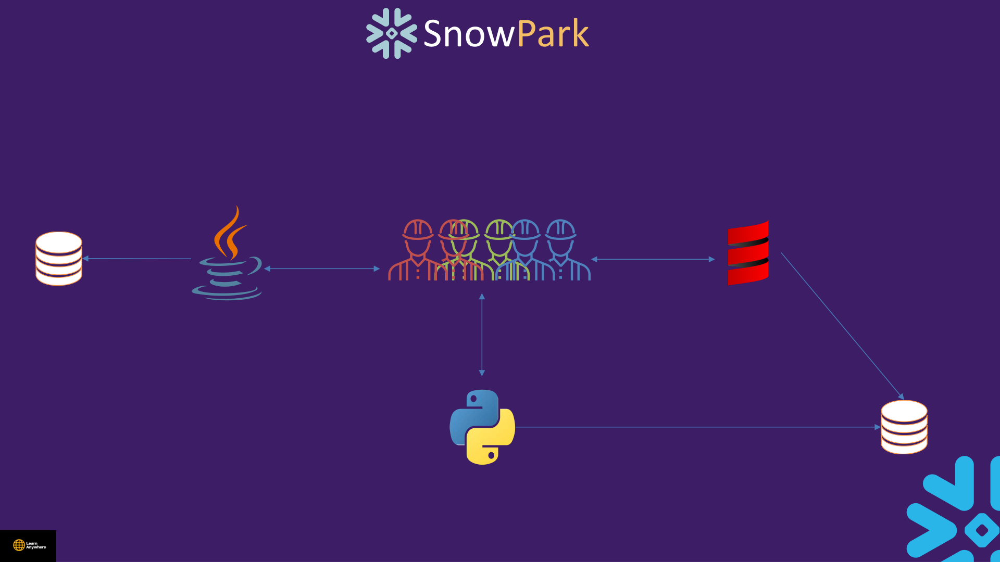

Lectures in this section
Every lecture below links to the notes that cover it.
- Snowflake SQL API 1:31
- Drivers & Connectors 0:49
- Demo : Snowflake Scripting 5:19 Snowflake Tools and Interfaces/Snowflake Scripting.txt
- Snowpark 2:02
- Dashboard 3:10
- Quiz
Snowflake SQL API
The Snowflake SQL API is a REST API for accessing and updating data in a Snowflake database without installing a JDBC or ODBC driver. Authenticate with OAuth or key-pair authentication — not username/password in the request body for production workloads.
It suits lightweight integrations, serverless functions, and CI pipelines that submit SQL and poll for results over HTTPS. Pass role, warehouse, database, and schema in each request so the statement runs with the correct privileges.
| Capability | What it does |
|---|---|
| Execute SQL | Submit statements for execution — queries, DDL, and DML |
| Check status | Poll the execution status of a submitted statement |
| Cancel | Cancel a statement that is still running |
| Manage deployments | Provision users, roles, and other account objects programmatically |
Supported
- SQL execution (SELECT, DDL, DML)
- Statement status polling and cancellation
- Deployment and provisioning operations
Not supported
PUTandGETfor stage file transfer- Any operation that needs a client with local filesystem access
The PUT/GET limitation is exam-worthy: file movement to and from stages requires a driver, SnowSQL, or Snowflake CLI that can reach the local filesystem. The SQL API cannot upload or download stage files over REST alone.
Billing for SQL API calls leverages the cloud services layer, not warehouse compute — metadata-only and lightweight REST operations do not spin up a virtual warehouse unless your submitted SQL explicitly needs one.
PUT/GET; billing on cloud services. Drivers = JDBC/ODBC/Python/Node for thick clients and stage file movement. Snowpipe automation also uses key-pair JWT, but that is a different endpoint — do not conflate Snowpipe ingestion with the SQL API.
Drivers & Connectors
Snowflake ships a family of native drivers and connectors so BI tools, ETL platforms, and custom apps can authenticate and run queries through standard interfaces — and perform stage file operations (PUT/GET) that the SQL API cannot.

| Interface | Typical client | Notes |
|---|---|---|
| JDBC | Tableau, Power BI, Informatica, Java apps | Industry-standard Java Database Connectivity |
| ODBC | Tableau, Power BI, legacy BI tools | Open Database Connectivity for Windows-centric stacks |
| Python connector | Data science, Airflow, custom ETL | Pairs with the Snowpark Python library |
| Node.js connector | Web backends, serverless functions | JavaScript/TypeScript applications |
| Go connector | Microservices, cloud-native backends | Same auth options as other drivers |
| .NET connector | C# / .NET enterprise applications | Native driver for the Microsoft stack |
| Spark connector | Databricks / Spark jobs | External compute reading and writing Snowflake tables |
| SnowSQL | Legacy CLI scripting | SQL plus stage PUT/GET; being superseded by Snowflake CLI |
| Snowflake CLI | DevOps, project deploy | SQL + object management beyond SnowSQL. Setup in Section 04 |
ACCOUNTADMIN in application configs.
Demo : Snowflake Scripting
Course file: Snowflake Tools and Interfaces/Snowflake Scripting.txt
Snowflake Scripting is an extension to Snowflake SQL that adds procedural logic. You use it to write stored procedures and also to run procedural code outside a stored procedure — anonymous blocks in Snowsight worksheets are the usual pattern.
For full coverage of UDFs and stored procedures (which wrap Scripting), see Section 5 — Advance Data Loading. This section focuses on the Scripting language itself.

Block structure
A Scripting block has four named sections. You declare variables in DECLARE, run statements in BEGIN, optionally catch errors in EXCEPTION, and close with END:
DECLARE
<variable declarations>
BEGIN
<executable statements>
EXCEPTION
<exception handlers>
END;What Scripting adds beyond plain SQL
- Declare variables and return a value from the block or procedure.
- Branching:
IFandCASEconstructs. - Loops:
FOR,WHILE,REPEAT, andLOOP. - Cursors for row-by-row processing over a result set.
RESULTSETfor capturing the output of a query inside the block.- DML row counts:
SQLROWCOUNT,SQLFOUND, andSQLNOTFOUNDreport how many rows the last DML affected. - Exception handling in the
EXCEPTIONsection when something fails.
USE ROLE ACCOUNTADMIN;
USE WAREHOUSE COMPUTE_WH;
CREATE OR REPLACE PROCEDURE circle_area()
RETURNS FLOAT
LANGUAGE SQL
AS
$$
DECLARE
radius FLOAT;
area FLOAT;
BEGIN
radius := 3;
area := PI() * radius * radius;
RETURN area;
END;
$$;
CALL circle_area();
-- Anonymous block in Snowsight (worksheet)
EXECUTE IMMEDIATE $$
DECLARE
count INTEGER DEFAULT 1;
BEGIN
IF (count < 0) THEN
RETURN 'negative';
ELSEIF (count = 0) THEN
RETURN 'zero';
ELSE
RETURN 'positive';
END IF;
END;
$$;
-- SQLROWCOUNT after DML
EXECUTE IMMEDIATE $$
BEGIN
CREATE OR REPLACE TABLE study_script.tmp_ids (id INT);
INSERT INTO study_script.tmp_ids VALUES (1), (2), (3);
RETURN SQLROWCOUNT; -- 3
END;
$$;EXECUTE IMMEDIATE $$ … $$ as shown in the course file. Snowsight worksheets accept bare BEGIN … END blocks in many builds.
Snowpark
Snowpark is Snowflake's developer framework for writing Python, Scala, or Java that runs inside the platform. You manipulate DataFrames and call ML libraries without shipping large datasets out of the account — the client sends program logic; the warehouse executes it on data that already lives in Snowflake.

- Data stays in Snowflake; compute runs on the warehouse you select.
- Integrates with scikit-learn, pandas, and the Snowpark API.
- Stored procedures can use
LANGUAGE PYTHONwithRUNTIME_VERSIONandPACKAGES. - Tasks can call Snowpark procedures; memory-heavy ML may need a Snowpark-optimized warehouse (see Section 15).
- External functions call out to external APIs via cloud infrastructure — separate from in-warehouse Snowpark.
CREATE OR REPLACE PROCEDURE study_sp.train_model()
RETURNS TABLE(warehouse STRING, duration_sec FLOAT, status STRING)
LANGUAGE PYTHON
RUNTIME_VERSION = '3.10'
PACKAGES = ('snowflake-snowpark-python', 'scikit-learn', 'pandas')
HANDLER = 'run'
AS $$
import time
from sklearn.ensemble import RandomForestClassifier
def run(session):
df = session.table('study_sp.demo_data').to_pandas()
X = df[['FEATURE_1','FEATURE_2','FEATURE_3','FEATURE_4']].values
y = df['LABEL'].values
start = time.time()
model = RandomForestClassifier(n_estimators=20, max_depth=5)
model.fit(X, y)
duration = time.time() - start
wh = session.get_current_warehouse()
return session.create_dataframe(
[[wh, duration, 'SUCCESS']],
schema=['WAREHOUSE','DURATION_SEC','STATUS']
)
$$;Dashboard
Snowsight dashboards let you build visual tiles (charts, tables, single values) from saved queries — a lightweight BI layer inside the Snowflake UI without exporting data to a separate tool.
- Create a dashboard from Projects in Snowsight; add tiles backed by worksheet queries or existing charts.
- Each tile query runs against your selected warehouse — dashboards do not bypass compute billing.
- Share dashboards with roles that have SELECT on the underlying objects; row access and masking policies still apply at query time.
- Parameters and filters can make one dashboard serve multiple audiences (region, date range).
AUTO_SUSPEND = 60).
Quiz
Self-check before moving on:
- Can you name two authentication methods for the SQL API?
- What must you wrap anonymous Scripting in when using SnowSQL?
- Why does Snowpark keep data inside Snowflake instead of exporting to a laptop?
- Does a Snowsight dashboard tile run without a warehouse when it scans table data?
Interview questions
Try to answer each one before opening it.
When would you use the Snowflake SQL API instead of a JDBC or Python driver?Comparison
Reach for the SQL API when you need lightweight, driverless SQL execution from serverless functions, CI pipelines, or microservices that only submit statements and poll for results. It is REST-based and authenticates with OAuth or key-pair JWT — not username/password in the body. Drivers are better for thick clients, BI tools, and anything that needs stage file movement (PUT/GET), which the SQL API does not support. If your app already uses ODBC/JDBC/Python connectors and needs binary stage transfers, stay on a driver.
How should a non-interactive service account authenticate to Snowflake connectors?Fundamentals
Use key-pair authentication rather than embedding passwords in config files. Generate an RSA key pair, register the public key on the Snowflake user, and sign JWTs from the application. Assign a least-privilege role — never ACCOUNTADMIN in connector configs. The same pattern applies across JDBC, ODBC, Python, Node.js, Go, and .NET connectors; only the client library differs. Rotate keys on a schedule and store the private key in a secrets manager, not source control.
What procedural features does Snowflake Scripting add beyond plain SQL?Fundamentals
Snowflake Scripting adds variables (DECLARE/LET), branching (IF/CASE), loops, cursors for row-by-row processing, RESULTSET for capturing query output, and exception handlers around BEGIN … END blocks. DML helpers include SQLROWCOUNT, SQLFOUND, and SQLNOTFOUND. You use it inside stored procedures (LANGUAGE SQL) or as anonymous blocks in Snowsight worksheets. The course Scripting demo builds a procedure that computes circle area with declared variables — the same patterns extend to ETL control flow.
Why do anonymous Scripting blocks in SnowSQL need EXECUTE IMMEDIATE $$ … $$?Gotcha
SnowSQL and the legacy console parse input line-by-line as individual SQL statements. A bare BEGIN … END block is not a valid standalone statement in that context — the client would split or reject it. Wrapping the block in EXECUTE IMMEDIATE $$ … $$ sends the entire script as one dynamic SQL string for Snowflake to compile and run. Snowsight worksheets accept bare blocks in many builds, which catches people who copy a Snowsight lab into SnowSQL and get syntax errors. Stored procedures do not need the wrapper because the body is already inside the procedure DDL.
What do SQLROWCOUNT and SQLID tell you in a Scripting block?Gotcha
SQLROWCOUNT returns rows affected by the last DML (INSERT, UPDATE, DELETE, MERGE) — the course demo inserts three rows and returns 3. A SELECT does not update it. SQLFOUND/SQLNOTFOUND boolean-test the same DML. SQLID returns the query ID of the last statement executed in the block, useful for correlating with Query History when debugging procedural code. Do not confuse SQLROWCOUNT with JDBC result-set row counts or with COUNT(*) from a separate query.
What is Snowpark, and where does the code actually execute?Fundamentals
Snowpark is Snowflake's developer framework for Python, Scala, and Java that exposes DataFrame-style APIs inside the platform. Your handler code runs on the warehouse you select — compute is pushed down to Snowflake, not executed on your laptop. Data stays in the account; the client only sends the program logic. Stored procedures with LANGUAGE PYTHON, RUNTIME_VERSION, and PACKAGES are the usual deployment path. External functions are different — they call out to cloud APIs outside the warehouse.
How would you choose between a Snowpark stored procedure, a SQL Scripting procedure, and a UDF?Comparison
Use a SQL Scripting stored procedure for procedural SQL, cursors, and DML orchestration without leaving SQL. Use a Snowpark stored procedure when you need pandas, scikit-learn, or custom Python/Scala logic on in-warehouse DataFrames — as in the course train_model() demo. Use a UDF for a scalar or tabular function invoked per row or per query inside SQL (SELECT my_udf(col)), not for multi-step workflows. UDFs are lighter for simple transforms; procedures own transactions, multiple statements, and side effects.
Do Snowsight dashboard tiles run without a warehouse, and how does SnowSQL differ from Snowflake CLI?Scenario
Dashboard tiles backed by queries that scan table data require an active warehouse — dashboards do not bypass compute billing, and auto-refresh can repeatedly resume warehouses. Row access and masking policies still apply at query time. SnowSQL is the legacy CLI focused on SQL scripting and stage operations. Snowflake CLI is the newer tool for broader dev workflows — SQL plus object management and project deploy. For exam and architecture questions: both are connectivity options, but CLI is the forward-looking choice for DevOps-style tasks; neither replaces the SQL API for REST-only integrations.
Why does the SQL API bill on cloud services instead of warehouse compute, and what cannot it do?Gotcha
SQL API REST calls themselves leverage the cloud services layer for submission, status polling, cancellation, and deployment management — you are not charged warehouse credits until the submitted SQL actually needs compute. The hard limitation is file transfer: PUT and GET are not supported because stage uploads and downloads require a client with local filesystem access. Use JDBC, ODBC, Python, SnowSQL, or Snowflake CLI for stage operations. Exam trap: "Use the SQL API to upload files to a stage" is always wrong.
What is the Snowflake Scripting block structure, and which loop types exist?Fundamentals
Every block follows DECLARE (variables) → BEGIN (statements) → optional EXCEPTION (error handlers) → END. Beyond branching with IF and CASE, Scripting supports four loop constructs: FOR, WHILE, REPEAT, and LOOP. You can also use cursors, RESULTSET, and DML helpers (SQLROWCOUNT, SQLFOUND, SQLNOTFOUND). Use it inside LANGUAGE SQL stored procedures or as anonymous blocks in Snowsight.
Hands-on practice
Run these in a trial account on an X-Small warehouse with AUTO_SUSPEND = 60. Clean up when you finish.
-
Create schema
study_scriptin a lab database, then build and call thecircle_area()SQL Scripting procedure from the course file (radius 3, returns πr²).CALL circle_area()returns approximately28.274…(9π).Show solutionSQL
USE ROLE ACCOUNTADMIN; USE WAREHOUSE COMPUTE_WH; CREATE DATABASE IF NOT EXISTS study_script_db; CREATE SCHEMA IF NOT EXISTS study_script_db.study_script; USE SCHEMA study_script_db.study_script; CREATE OR REPLACE PROCEDURE circle_area() RETURNS FLOAT LANGUAGE SQL AS $$ DECLARE radius FLOAT; area FLOAT; BEGIN radius := 3; area := PI() * radius * radius; RETURN area; END; $$; CALL circle_area(); -
Run an anonymous Scripting block that creates a temp table, inserts three rows, and returns
SQLROWCOUNT. UseEXECUTE IMMEDIATEif your client requires it.The block returns
3. A subsequentSELECTinside the same block does not changeSQLROWCOUNT.Show solutionSQL
EXECUTE IMMEDIATE $$ BEGIN CREATE OR REPLACE TABLE study_script_db.study_script.tmp_ids (id INT); INSERT INTO study_script_db.study_script.tmp_ids VALUES (1), (2), (3); RETURN SQLROWCOUNT; END; $$; -
Drop the procedure, temp table, schema, and database created in this section. Suspend the warehouse when finished.
All objects removed;
SHOW PROCEDURES LIKE 'circle_area%'in the schema returns no rows; warehouse showsSUSPENDED.Show solutionSQL
DROP PROCEDURE IF EXISTS study_script_db.study_script.circle_area(); DROP TABLE IF EXISTS study_script_db.study_script.tmp_ids; DROP SCHEMA IF EXISTS study_script_db.study_script; DROP DATABASE IF EXISTS study_script_db; ALTER WAREHOUSE IF EXISTS COMPUTE_WH SUSPEND;
Recap
- SQL API: REST + OAuth/key-pair; submit/cancel/status/deploy; no PUT/GET; bills on cloud services.
- Drivers: JDBC, ODBC, Python, Node.js, Go, .NET, Spark, SnowSQL, Snowflake CLI.
- Scripting: DECLARE/BEGIN/EXCEPTION/END; IF/CASE; FOR/WHILE/REPEAT/LOOP; cursors, RESULTSET, SQLROWCOUNT.
- Snowpark: Python/Scala/Java DataFrames pushed down to warehouse compute.
- Snowsight dashboards: query-backed tiles; warehouse required for data scans.